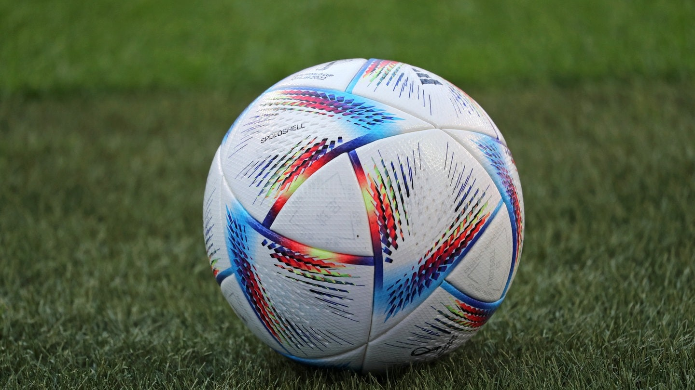
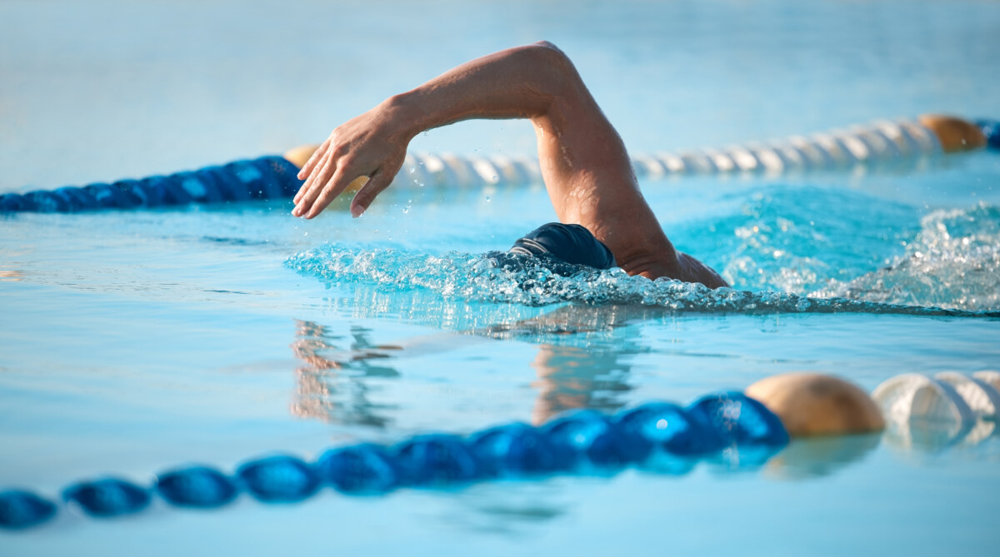
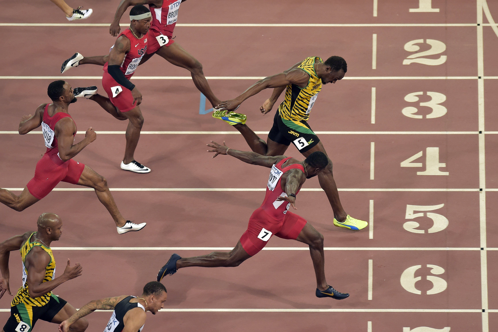
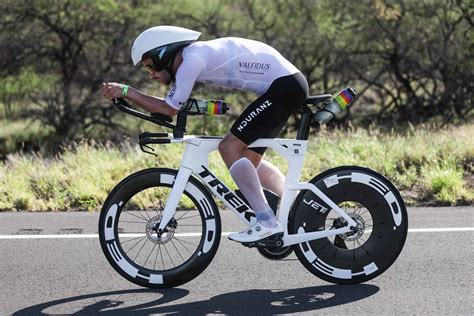
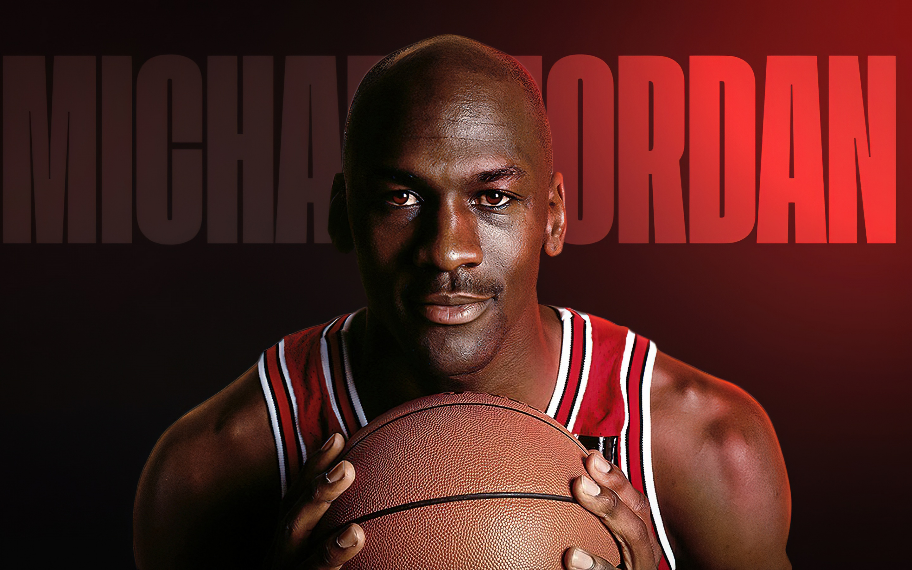

Über mich
Einer meiner Hü´s ist es eine Seite in HTML & CSS zu schreiben.
Jetzt seit ihr hier und liest das was ich geschrieben habe.
Sport
Sport ist wichtig für Gesundheit und Wohlbefinden. Hier sind einige beliebte Sportarten:
-  Fußball
-
 Basketball
Basketball
-  Schwimmen
-  Laufen
-  Radfahren
Regelmäßige Bewegung stärkt den Körper und fördert die Konzentration.
Super Sportler
- Cristiano Ronaldo (Fußball)
-
 Lionel Messi (Fußball)
Lionel Messi (Fußball)
-  Michael Jordan (Basketball)
-
 Michael Phelps (Schwimmen)
Michael Phelps (Schwimmen)
-
 Usain Bolt (Laufen)
Usain Bolt (Laufen)
-
 Lance Armstrong (Radfahren)
Lance Armstrong (Radfahren)